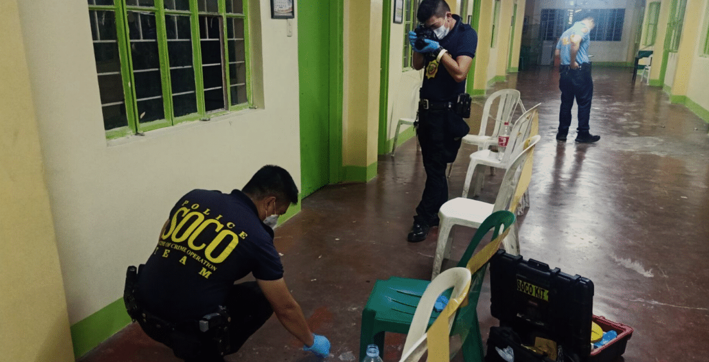

Las Piñas National High School Stabbing (July 31, 2026) — Local Case
Incident:
A 13-year-old male student died from a chest wound after being stabbed by a 14-year-old schoolmate on the fourth-floor stairs right outside their classroom during recess.
Why It Matters:
This happened in our own city during a regular school break. Minor campus disagreements turn deadly within seconds when teenagers harbor deep anger and have no guidance counselor to turn to when tensions rise.